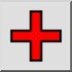
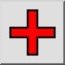
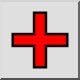
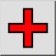

Adicione um Bloco Vazio
Barra de Ferramenta / Ícone:
 

Menu: Bloqueio > Adicione um Bloco Vazio
Atalho: B, A
Comandos: blockadd | ba
Esta é uma tradução automática.
Barra de Ferramenta / Ícone:
 

Menu: Bloqueio > Adicione um Bloco Vazio
Atalho: B, A
Comandos: blockadd | ba
Este comando cria um novo bloco vazio. Uma caixa de diálogo é exibida, onde você pode especificar o nome do novo bloco. Se você quer criar um bloco à partir de entidades existentes, utilize o comando cria um bloco.